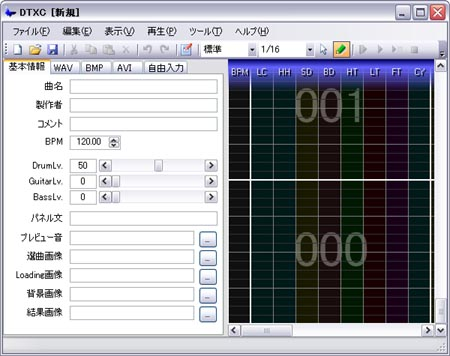

DTXCreatorとは？
DTXCreator は、DTXファイルを作成するためのGUIエディタです。
BMSCreator や GDACreator とよく似た操作方法を保ちながら、DTXファイル特有の性質にあわせた効果的な編集が可能です。

DTXCreator の概観
動作環境
- .NET Framework 2.0 以上とManaged DirectX 1.1 が必須。
- DTXViewer があると、DTXCreator からテスト再生が可能になります。なくても動作します。
インストールとアンインストール
- インストール作業は特に必要ありません。そのままご使用下さい。
- アンインストール時はそのままファイル一式を削除して下さい。レジストリは使用していません。